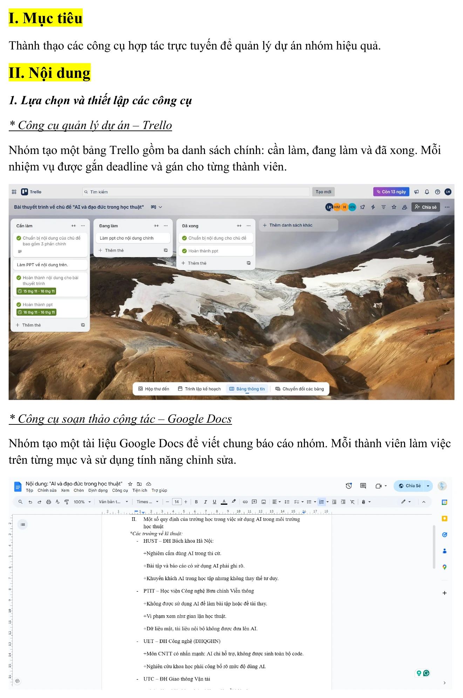
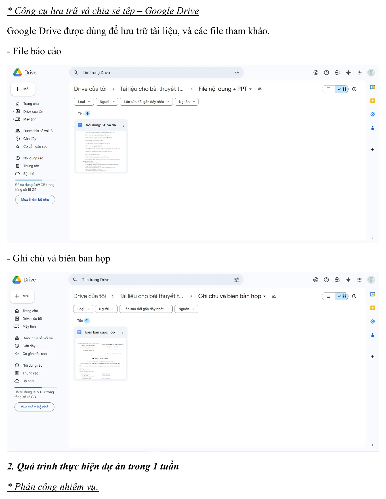
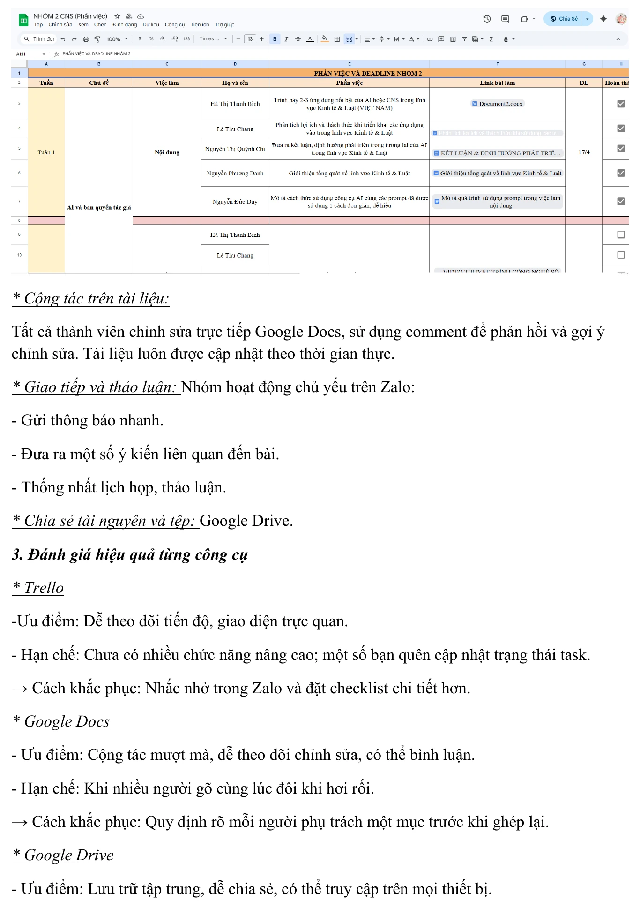
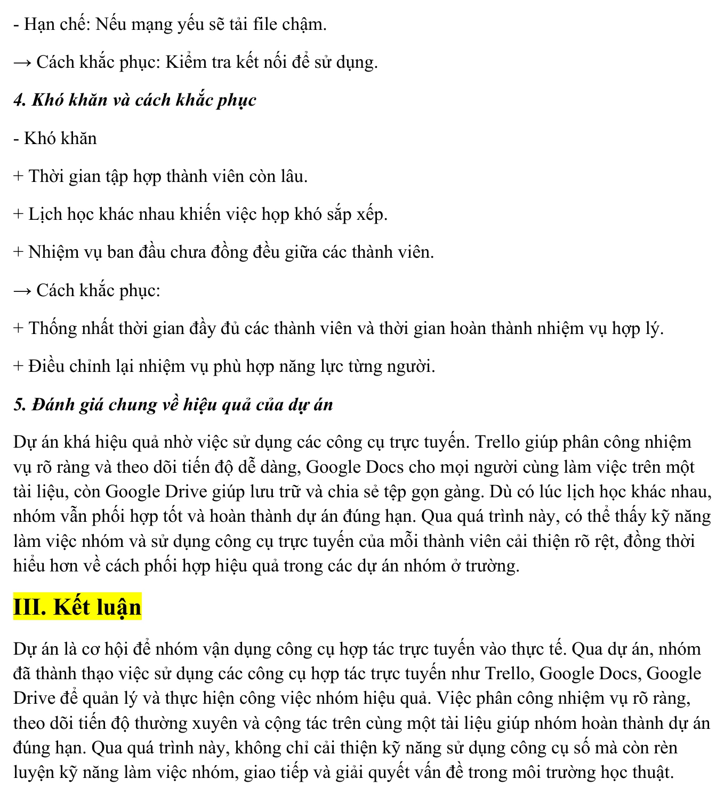

Năng lực cần hình thành
Bài tập giúp mình vận dụng các công cụ cộng tác trực tuyến vào một dự án nhóm thực tế. Trọng tâm không chỉ là biết sử dụng từng nền tảng, mà còn là phối hợp các công cụ thành một quy trình thống nhất để phân công, trao đổi, cùng biên soạn, lưu trữ và kiểm soát tiến độ công việc.
Mục tiêu cụ thể
- Biết thiết lập bảng Trello với các trạng thái Cần làm, Đang làm và Đã xong; gán người phụ trách và thời hạn cho từng nhiệm vụ.
- Biết cùng soạn thảo trên Google Docs, sử dụng bình luận và theo dõi thay đổi để góp ý mà không tạo nhiều bản tài liệu rời rạc.
- Biết tổ chức thư mục Google Drive để lưu báo cáo, tài liệu tham khảo, ghi chú và biên bản họp tại một vị trí dùng chung.
- Biết sử dụng Zalo để gửi thông báo, thống nhất lịch, nhắc tiến độ và xử lý nhanh các nội dung cần trao đổi.
- Biết chuẩn bị và tham gia cuộc họp trực tuyến có chương trình, phân công trình bày, phản hồi và kết luận rõ ràng.
- Rèn luyện kỹ năng giao tiếp, phối hợp, chịu trách nhiệm và giải quyết vấn đề trong môi trường học thuật số.
Hệ thống công cụ được sử dụng
Nhóm thực hiện dự án trong một tuần và sử dụng nhiều nền tảng cho các mục đích khác nhau. Thay vì dùng một công cụ cho toàn bộ công việc, mỗi nền tảng được lựa chọn theo thế mạnh riêng và được kết nối thành một quy trình cộng tác thống nhất.
Trello – quản lý nhiệm vụ và tiến độ
Nhóm tạo bảng Trello với ba danh sách Cần làm, Đang làm và Đã xong. Mỗi thẻ công việc được gắn người phụ trách, thời hạn và trạng thái để mọi thành viên quan sát được tiến độ chung.
Google Docs – cùng biên soạn nội dung
Báo cáo và nội dung thuyết trình được viết trên một tài liệu dùng chung. Các thành viên phụ trách từng mục, chỉnh sửa trực tiếp và sử dụng bình luận để phản hồi hoặc đề xuất thay đổi mà không cần gửi nhiều phiên bản qua lại.
Google Drive – lưu trữ và chia sẻ tài nguyên
Google Drive được dùng để tập trung file báo cáo, hình ảnh, tài liệu tham khảo, ghi chú và biên bản họp. Việc lưu trữ chung giúp các thành viên truy cập tài liệu trên nhiều thiết bị và hạn chế thất lạc tệp.
Zalo – trao đổi và thống nhất nhanh
Zalo được sử dụng để gửi thông báo, trao đổi ý kiến, nhắc cập nhật nhiệm vụ và thống nhất lịch họp. Đây là kênh phản hồi nhanh, hỗ trợ xử lý các vấn đề phát sinh giữa các lần làm việc chung.
Họp trực tuyến – trình bày và ra quyết định
Cuộc họp trực tuyến giúp các thành viên trình bày phần đã thực hiện, trao đổi những nội dung còn khác biệt, phân công bước tiếp theo và thống nhất phiên bản cuối của sản phẩm.
Quá trình phối hợp trong một tuần
Quy trình được tổ chức theo từng giai đoạn để các thành viên biết rõ việc cần làm, thời điểm hoàn thành và kênh sử dụng. Việc cập nhật thường xuyên giúp nhóm phát hiện nhiệm vụ chậm tiến độ và điều chỉnh trước khi đến hạn nộp.
Khởi động và thống nhất yêu cầu
Nhóm đọc yêu cầu bài tập, xác định sản phẩm cần hoàn thành, thống nhất nội dung chính, thời gian thực hiện và nguyên tắc phối hợp. Mỗi thành viên được giao một phần việc phù hợp với khả năng và thời gian cá nhân.
Lập kế hoạch và phân công
Các nhiệm vụ được đưa lên Trello, gắn người phụ trách và thời hạn. Những việc lớn được chia thành các bước nhỏ để dễ theo dõi, đồng thời trạng thái được chuyển từ Cần làm sang Đang làm và Đã xong.
Cùng xây dựng nội dung
Thành viên viết phần được giao trên Google Docs. Nhóm sử dụng bình luận để góp ý, bổ sung dẫn chứng và thống nhất cách trình bày. Tài liệu được cập nhật theo thời gian thực nên mọi người đều theo dõi được phiên bản mới nhất.
Chia sẻ tài nguyên và theo dõi tiến độ
Các tệp liên quan được đưa vào Google Drive, trong khi Zalo được dùng để thông báo nội dung mới và nhắc những nhiệm vụ chưa hoàn thành. Nhóm kiểm tra Trello định kỳ để điều chỉnh tiến độ hoặc phân công lại khi cần.
Họp trực tuyến và hoàn thiện sản phẩm
Trong cuộc họp, từng thành viên trình bày phần việc, nhận phản hồi và thống nhất nội dung cần chỉnh sửa. Sau cuộc họp, nhóm rà soát báo cáo, chuẩn hóa định dạng, kiểm tra đường dẫn và hoàn thiện bản nộp cuối cùng.
Tổ chức và tham gia cuộc họp trực tuyến
Cuộc họp trực tuyến được tổ chức để các thành viên trình bày nội dung, trao đổi ý kiến, phản hồi và thống nhất những công việc cần hoàn thành.
Hoạt động cho thấy quá trình chuẩn bị nội dung, phân công vai trò, trình bày ý kiến, lắng nghe và phối hợp giữa các thành viên trong môi trường số.
Nếu trình duyệt không phát được video nhúng, hãy sử dụng nút “Mở trên YouTube”.
Quá trình thực hiện trên máy tính
Dưới đây là quá trình thực hành từ việc thiết lập công cụ, lưu trữ tài nguyên, phân công nhiệm vụ, đánh giá hiệu quả và xử lý khó khăn.
Nhấn vào từng ảnh để xem kích thước lớn.




Đối chiếu với yêu cầu bài tập
- Có minh chứng về công cụ quản lý dự án và theo dõi trạng thái nhiệm vụ.
- Có minh chứng về quá trình cùng chỉnh sửa và phản hồi trên tài liệu trực tuyến.
- Có minh chứng về việc lưu trữ báo cáo, tài liệu và biên bản trên Drive.
- Có bảng phân công thể hiện người phụ trách, thời hạn và tình trạng hoàn thành.
- Có đánh giá ưu điểm, hạn chế và cách khắc phục đối với từng công cụ.
- Có video ghi lại hoạt động giao tiếp và phối hợp trực tuyến của nhóm.
Vai trò và hiệu quả của từng nền tảng
Mỗi công cụ giải quyết một nhóm nhu cầu khác nhau. Hiệu quả của dự án đến từ việc phân định đúng vai trò của từng nền tảng và duy trì quy tắc sử dụng thống nhất trong suốt quá trình làm việc.
| Công cụ | Ưu điểm | Hạn chế | Hướng cải thiện |
|---|---|---|---|
| Trello | Trực quan, dễ phân công, đặt thời hạn và theo dõi tiến độ. | Một số thành viên có thể quên cập nhật trạng thái nhiệm vụ. | Dùng checklist con, nhãn ưu tiên và quy định thời điểm cập nhật cố định. |
| Google Docs | Cùng chỉnh sửa theo thời gian thực, có bình luận và lịch sử phiên bản. | Nhiều người sửa cùng một đoạn có thể gây rối hoặc trùng lặp. | Phân rõ mục phụ trách và dùng chế độ đề xuất trước khi ghép nội dung. |
| Google Drive | Lưu trữ tập trung, dễ chia sẻ và truy cập trên nhiều thiết bị. | Phụ thuộc kết nối mạng; thư mục có thể khó tìm nếu đặt tên thiếu thống nhất. | Dùng cấu trúc thư mục và quy tắc đặt tên chung, đồng thời kiểm tra quyền truy cập. |
| Zalo | Thông báo nhanh, dễ thống nhất lịch và xử lý vấn đề phát sinh. | Tin nhắn nhiều có thể làm thông tin quan trọng bị trôi. | Ghim thông báo, tóm tắt quyết định và chuyển nhiệm vụ chính thức lên Trello. |
| Họp trực tuyến | Trao đổi trực tiếp, phản hồi nhanh và thống nhất quyết định chung. | Khó sắp xếp lịch; cuộc họp có thể kéo dài nếu thiếu chương trình. | Gửi trước agenda, giới hạn thời gian trình bày và lập biên bản sau cuộc họp. |
Những gì nhóm đạt được
Dự án được hoàn thành đúng hạn nhờ công việc được phân chia rõ, tài liệu được lưu trữ tập trung và các thành viên có thể phản hồi trên cùng một hệ thống thay vì trao đổi qua nhiều bản tệp khác nhau.
- Phân công nhiệm vụ rõ ràng hơn và theo dõi tiến độ trực quan.
- Các thành viên cùng xây dựng nội dung trên một tài liệu cập nhật theo thời gian thực.
- Giảm nhầm lẫn phiên bản nhờ sử dụng Google Docs và Google Drive dùng chung.
- Tài liệu, hình ảnh và biên bản được lưu tập trung, dễ tìm và dễ chia sẻ.
- Zalo và họp trực tuyến giúp xử lý nhanh nội dung chưa thống nhất.
- Video và ảnh minh chứng thể hiện cả quá trình phối hợp, không chỉ kết quả cuối.
- Kỹ năng giao tiếp, làm việc nhóm và sử dụng công cụ số của các thành viên được cải thiện.
Bài học và hướng hoàn thiện
Những khó khăn đã gặp
Khó khăn lớn nhất là lịch học của các thành viên không giống nhau, khiến việc tập hợp đầy đủ và tổ chức họp mất thời gian. Bên cạnh đó, khối lượng nhiệm vụ ban đầu chưa thật sự đồng đều và một số trạng thái trên Trello chưa được cập nhật kịp thời.
Quá trình cùng chỉnh sửa trên Google Docs đôi lúc cũng gây rối khi nhiều người thay đổi cùng một phần. Với Google Drive, tốc độ tải và truy cập phụ thuộc vào kết nối mạng của từng thành viên.
Cách nhóm đã xử lý
- Thống nhất trước khung thời gian có thể tham gia của tất cả thành viên.
- Điều chỉnh nhiệm vụ theo năng lực và thời gian thực tế của từng người.
- Nhắc cập nhật Trello qua Zalo và kiểm tra tiến độ tại các mốc giữa tuần.
- Phân rõ mục phụ trách trên Google Docs để hạn chế chỉnh sửa chồng chéo.
- Kiểm tra quyền truy cập và kết nối trước khi chia sẻ hoặc họp trực tuyến.
Nếu thực hiện lại, nhóm sẽ
- Mỗi nhiệm vụ chỉ định một người chịu trách nhiệm chính và một người hỗ trợ.
- Dùng checklist, nhãn mức độ ưu tiên và ngày kiểm tra trung gian trên Trello.
- Tổ chức Drive theo các thư mục: 01_BienBan, 02_NoiDung, 03_HinhAnh, 04_BanNop.
- Dùng chế độ đề xuất và lịch sử phiên bản trên Google Docs để kiểm soát thay đổi.
- Gửi chương trình họp trước, quy định thời lượng và ghi rõ kết luận sau cuộc họp.
- Tổng hợp quyết định quan trọng từ Zalo sang Trello hoặc biên bản để tránh thất lạc.
Qua dự án, mình nhận thấy công cụ số chỉ thực sự hiệu quả khi đi kèm quy tắc làm việc, trách nhiệm cá nhân và cách giao tiếp rõ ràng. Công cụ hỗ trợ nhóm phối hợp tốt hơn, nhưng chất lượng cuối cùng vẫn phụ thuộc vào mức độ chủ động, cập nhật và cam kết của từng thành viên.
Sản phẩm đầy đủ
Báo cáo PDF trình bày việc lựa chọn công cụ, quá trình thực hiện trong một tuần, đánh giá hiệu quả, khó khăn, cách khắc phục và kết quả của dự án. Nếu trình duyệt không hiển thị khung xem trước, hãy dùng nút mở PDF.